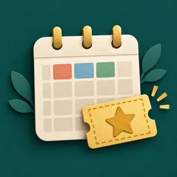
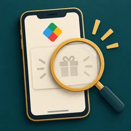

Google Play Points 記事ガイド
Play Pointsの仕組み、ランクの特典、ポイントの使い道を知りたいことから探せます。
目的別の読む順番
保存した記事・閲覧履歴
この端末だけに保存します（保存100件・履歴20件まで）。ブラウザのデータ削除で消えます。
記事を探す
カテゴリーで絞る
カテゴリーは横にスクロールできます
1〜12件目 / 87件 · 1 / 8ページ
スーパーウィークリーで何が当たる？賞品一覧と掲載履歴
スーパーウィークリーの賞品を確認したい方へ。現在の掲載と過去の賞品例、対象ランク、参加条件の確認先が分かります。
幻水SPの課金はどこがお得？Web増量とGoogle Playポイントを比較
通常商品と初回セールの幻想石を比較。購入先を選ぶ前に、OSと有償石の扱い、ポイントの使い道を確認できます。
Black Diamond・Diamond VIPはある？新ランクの痕跡を検証
公式の公開ランクは5段階。Black Diamond・Diamond VIPの確認できた痕跡と、未確定の条件を分けて確認できます。
NIKKE｜30日補給とMidasbuyの選び方
30日間の受取を続けられるか、すぐジュエルが必要かで比較。Midasbuyのマンスリーカードと通常購入の違いが分かります。
ブルアカ｜マンスリーと購入先の選び方
マンスリーとハーフを、AP特典と受取日数で比較。公式チャージセンターとGoogle Playの購入条件も確認できます。
学マス｜WEB SHOP・Google Play・DMMの違い
WEB SHOPの増量とGoogle Playの還元を比較。購入前にスマホ版・DMM版でのジュエルの扱いも確認できます。
ポケスリ｜クーポンの交換・使い方
ポケスリのクーポンを交換・使用する手順と期限を確認。表示されない時や、プレミアムパス購入前の注意点が分かります。
モンスト｜パックとモンパスの選び方
常設パックとモンパスを、価格・内容・購入条件で比較。確定ガチャや遊び方に合わせて選べます。
モンスト｜1万円課金の損得分岐点を計算
1万円でアプリ180個、Web190個・月1回200個。将来使えるポイントが何円分あれば逆転するか確認できます。

Play Pointsのお得カレンダー｜毎週・毎月の確認日
金曜の週次特典、毎月1日のポイントデーなど、確認する日を一覧で把握。毎日・毎週・毎月の特典を見落としにくくなります。
Google PlayのSuper Ticket（スーパーチケット）とは？配布日・保存期限・使い方
Super Ticketを受け取ったら、48時間以内の保存と使用期限を確認。再抽選で元の報酬を失う条件にも注意できます。

「みんなには出てるのに自分にはない」Google Play Pointsの増量キャンペーンが表示されない理由
自分だけ増量キャンペーンが出ない時の確認順。対象者、設定、端末、国・通貨の条件を切り分けられます。